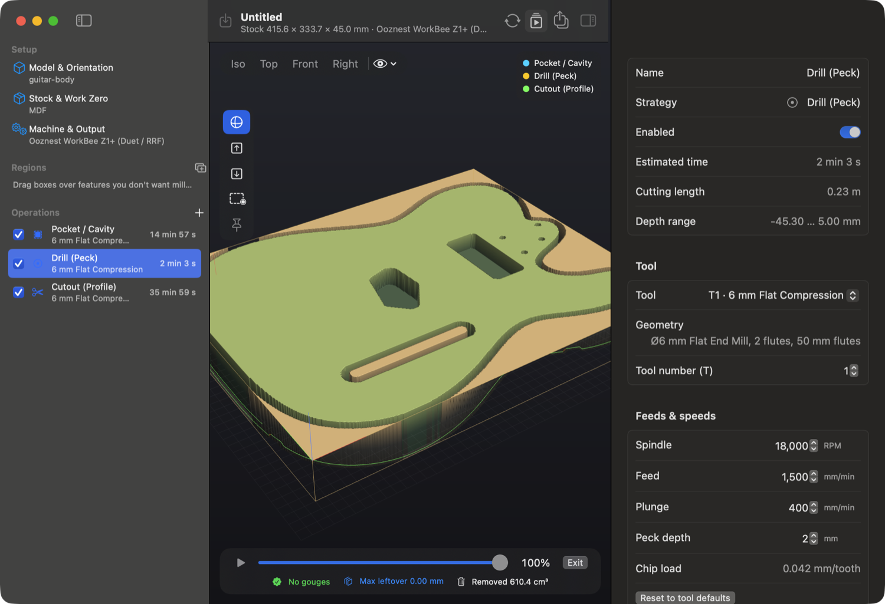
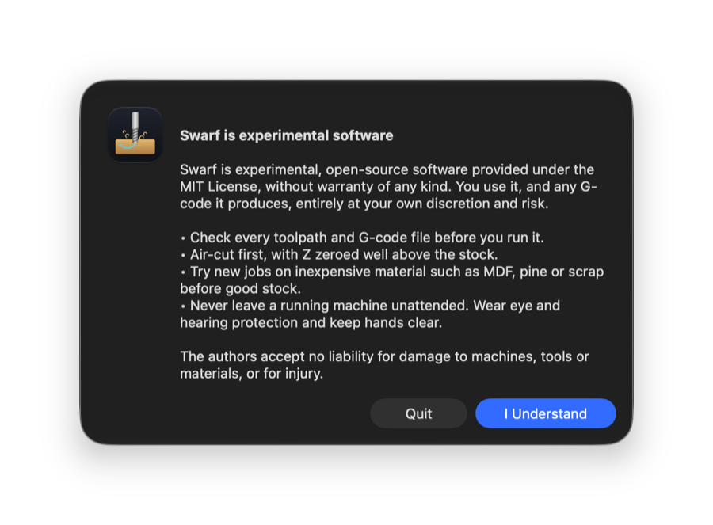
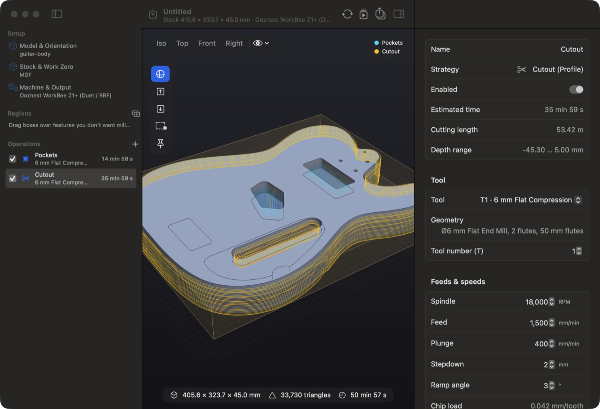
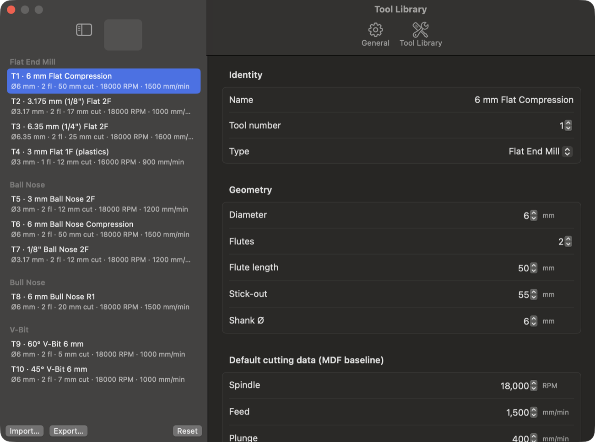
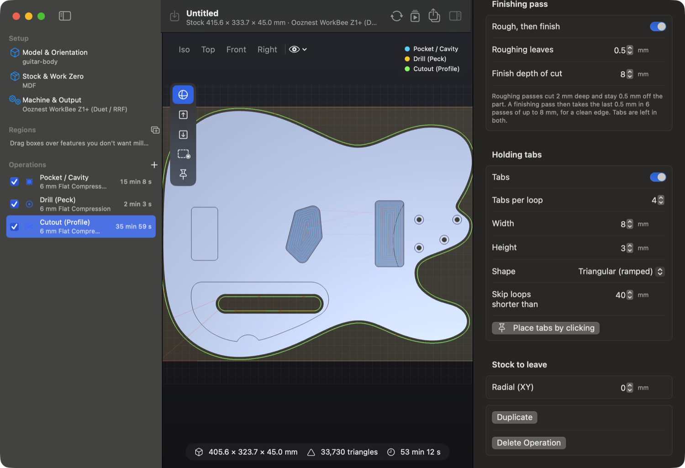
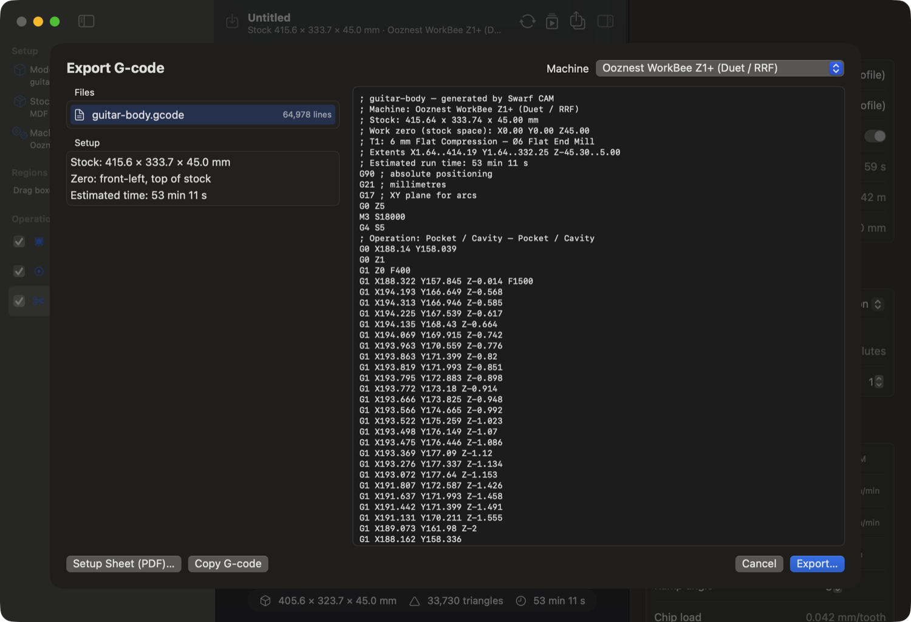

Swarf is experimental software. You use it, and any G-code it produces, at your own discretion and risk.
It is provided under the MIT License without warranty of any kind. The authors accept no liability for damage to machines, tools or materials, or for injury.
Every time Swarf starts, it shows this notice and asks you to click I Understand. Clicking Quit closes the app. Make these habits part of every job:

Swarf runs on macOS 15 or later and builds from source with Xcode 16 or later. Install Xcode (or its command line tools), then in Terminal:
git clone https://github.com/mouldiwarp/swarf.git cd swarf scripts/build-app.sh # builds build/Swarf.app open build/Swarf.app
You can copy build/Swarf.app to your Applications folder. To update later, run git pull and
scripts/build-app.sh again.

| Area | What it does |
|---|---|
| Sidebar (left) | Setup (Model & Orientation, Stock & Work Zero, Machine & Output), Regions (keep-out boxes) and the Operations list. Tick or untick an operation to turn it on or off. Right-click to duplicate or delete. |
| Viewport (centre) | The 3D view of the model, the stock and the toolpaths. Use Iso / Top / Front / Right for preset views and the eye menu to show or hide layers. The tool strip down the left side switches between orbit, pick face up, pick face down, draw keep-out and place tabs. |
| Inspector (right) | The settings for whatever is selected in the sidebar. |
| Toolbar | Import STL, Generate (recalculate the toolpaths), Simulate, Export G-code, and show or hide the inspector. |
| Status bar | Model size, triangle count, a mesh health warning, and the total estimated run time. |
Navigating the 3D view: drag to orbit, scroll or pinch to zoom, and drag with ⇧ or ⌥ held (or right-drag) to pan.
Select Stock & Work Zero in the sidebar.
Select Machine & Output to pick the post-processor. The default is the Ooznest WorkBee Z1+ (Duet / RRF). Profiles are also included for generic RepRapFirmware, GRBL 1.1, Carbide 3D Shapeoko / Nomad, Sienci LongMill / AltMill, X-Carve, Genmitsu, Onefinity, grblHAL / FluidNC, MASSO G3, LinuxCNC, Mach3 / Mach4, UCCNC and Marlin. Each profile knows the machine's work envelope, maximum feeds and spindle range, and Swarf warns you if a job won't fit.
You can set the default machine, material and resolution for new projects in Swarf ▸ Settings ▸ General.

Open Swarf ▸ Settings… (⌘,) and choose Tool Library. Select a tool to edit it, or use Add Tool, Duplicate and Delete. Import… reads Fusion 360 tool libraries and Swarf JSON files, and Export… saves your library. Reset restores the starter set.
The starter library includes 6 mm flat and ball-nose compression cutters (50 mm flutes), 1/8", 1/4" and 3 mm cutters, a 6 mm bull nose, and 60° and 45° 6 mm V-bits. New cutouts, pockets and drilling use the 6 mm flat, 3D finishing uses the 6 mm ball, and V-carving uses the 60° V-bit.
An operation is one machining step with one tool. Click Full Processing in the sidebar to let Swarf look at the model and add what it needs: facing if the model sits below the stock top, roughing and finishing for curved tops, pockets for cavities, and a cutout with tabs. Or click + to add operations yourself. Operations run in list order. Drag them to reorder.
| Operation | Use it for |
|---|---|
| Facing | Flattening the stock top. Set the depth and choose zig-zag or one-way passes. |
| Pocket / Cavity | Flat-bottomed recesses such as pickup and control cavities. Offset passes with an exact pass on every flat floor. |
| 3D Roughing | Removing bulk material from curved shapes layer by layer, leaving stock for finishing. |
| 3D Finish – Parallel | Smooth surfaces with a ball nose, in raster passes at any angle. Optionally only on slopes below a set angle. |
| 3D Finish – Waterline | Steep walls, using constant-height contours. Optionally only on slopes above a set angle. |
| V-Carve | Lettering and logos with a V-bit (see chapter 11). |
| Drill (Peck) | Round holes that match the tool size (see chapter 10). |
| Cutout (Profile) | Cutting the part free with tabs (see chapter 9). |
Changes regenerate the toolpaths automatically. Each operation shows its estimated time, cutting length, depth range and any warnings.

The cutout follows the outside of the model, offset by the tool radius, and goes through the stock by Cut below stock (0.3 mm by default). Also cut internal holes cuts through-openings first, while the part is still held at the edges.
On by default. The roughing passes cut at your normal stepdown but stay 0.5 mm (Roughing leaves) off the part. A finishing pass then follows the true outline and removes that last 0.5 mm skin at a much deeper Finish depth of cut, 4× the roughing stepdown by default. With a 2 mm stepdown, the finishing pass takes 8 mm per pass. Because it only removes 0.5 mm sideways, the load stays light and the edge comes out clean. If you change the finish depth, a 4× button puts it back to the default.
Drill (Peck) finds round vertical holes in the model and drills the ones that match the tool, within Hole size match ± (0.5 mm by default). Holes of other sizes are listed in a warning. Larger through holes are cut by the cutout, and larger blind holes need a pocket.
V-Carve engraves with a V-bit. The bit follows the centre line of each shape and goes deeper where the shape is wider, so edges and corners stay sharp. Engrave chooses what is carved:
Limit depth (flat bottom) caps the depth for wide shapes. Stepdown splits deep carves into several passes. Use keep-out or machine-only regions to limit what gets engraved. A 60° bit carves deeper and narrower than a 90° bit, and a 45° bit deeper still. Set the bit's tip diameter in the library if it isn't sharp.
Keep-out boxes protect features you don't want milled, or cover clamps.
The cutter stays a full radius away from keep-outs in every operation except cutouts. The simulator reports any keep-out violations.
Click Simulate (⌘R) to remove material from a virtual block of stock. Use the scrubber or play button to watch the job. Below the scrubber you'll see:
Click Exit to return to the toolpath view. Warnings such as feeds out of range, cuts deeper than the flute length, a job outside the machine envelope, or cuts below the stock bottom appear on each operation in the inspector.

For the WorkBee, Swarf writes one file per tool, numbered in the order they run. Other machines get a single file with tool-change commands where the controller supports them.
| Problem | What to try |
|---|---|
| "Operation produced no toolpath" or "Nothing to clear" | The tool may be too big for the feature, or the boundary excludes it. Try a smaller tool, or change the Area boundary. |
| Drilling skips holes | The holes don't match the tool diameter. Raise Hole size match ±, choose a matching tool, or use a pocket. |
| "Cut depth exceeds the tool's flute length" | The job is deeper than the bit can cut. Use a longer bit, or check the flute length in the tool library. |
| "Cuts below the stock bottom" | Check the stock thickness and model placement. For V-carving, set a depth limit or use a wider-angle bit. |
| Chip-load warnings | Low chip load rubs and burns, so raise the feed or lower the RPM. High chip load stresses the bit, so do the opposite. |
| Generating is slow | Use draft resolution while setting up and switch to normal or fine for the final job. |
| Model too small or large | It was probably modelled in inches or metres. Set the scale under Model & Orientation. |
swarf-cli runs the same engine without the app:
swift build -c release .build/release/swarf-cli model.stl --out ./gcode --simulate --png preview.png .build/release/swarf-cli model.stl --ops pocket,drill,cutout --material plywood .build/release/swarf-cli --list-machines
Options: --machine, --material, --quality draft|normal|fine, --lay-flat, --rotate x:90,
--ops (facing, pocket, roughing, parallelFinish, waterlineFinish, vcarve, drill, cutout), --keepout x0,y0,x1,y1,
--vcarve-source recesses|silhouette, --vcarve-depth.
| Action | Shortcut | Action | Shortcut |
|---|---|---|---|
| Import STL | ⇧⌘I | Lay flat | ⌥⌘L |
| Generate toolpaths | ⌘G | Pick face to point up | ⌥⌘U |
| Simulate | ⌘R | Pick face to lay on bed | ⌥⌘D |
| Export G-code | ⌘E | Rotate 90° about X / Y / Z | ⌥⌘X / ⌥⌘Y / ⌥⌘Z |
| Settings / tool library | ⌘, | Draw keep-out | ⌥⌘K |
| Undo / Redo | ⌘Z / ⇧⌘Z | Move / delete selected keep-out | Arrows / ⌫ |
Swarf is free software under the MIT License, provided "as is", without warranty of any kind. Source, issues and contributions: github.com/mouldiwarp/swarf.